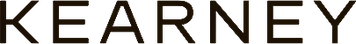
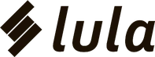
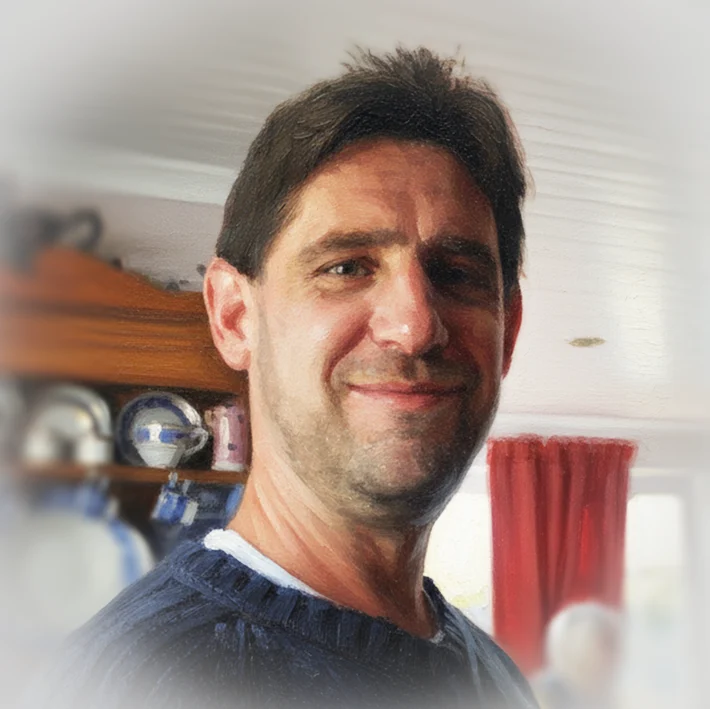
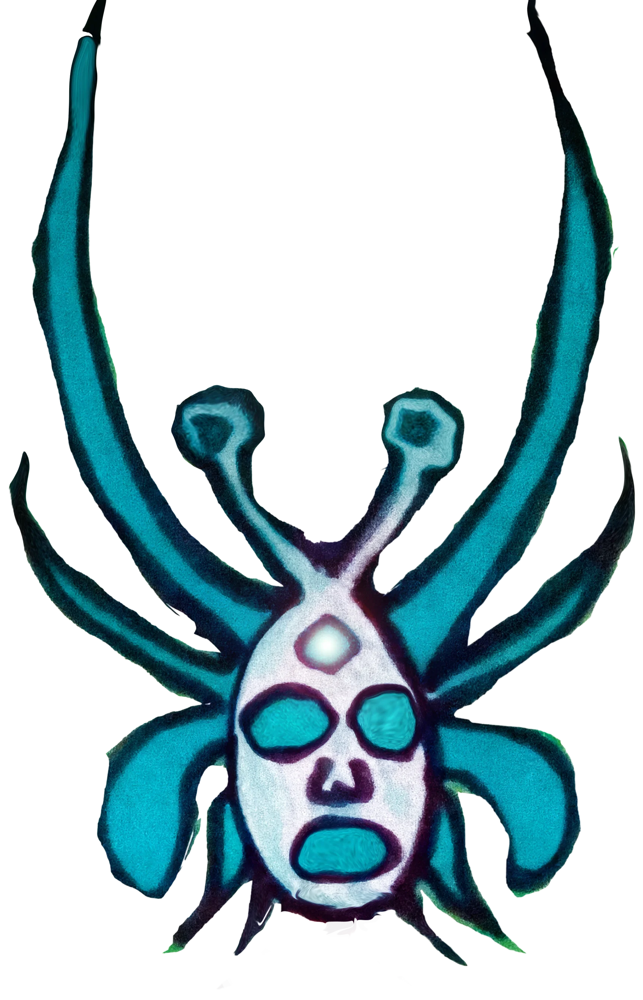
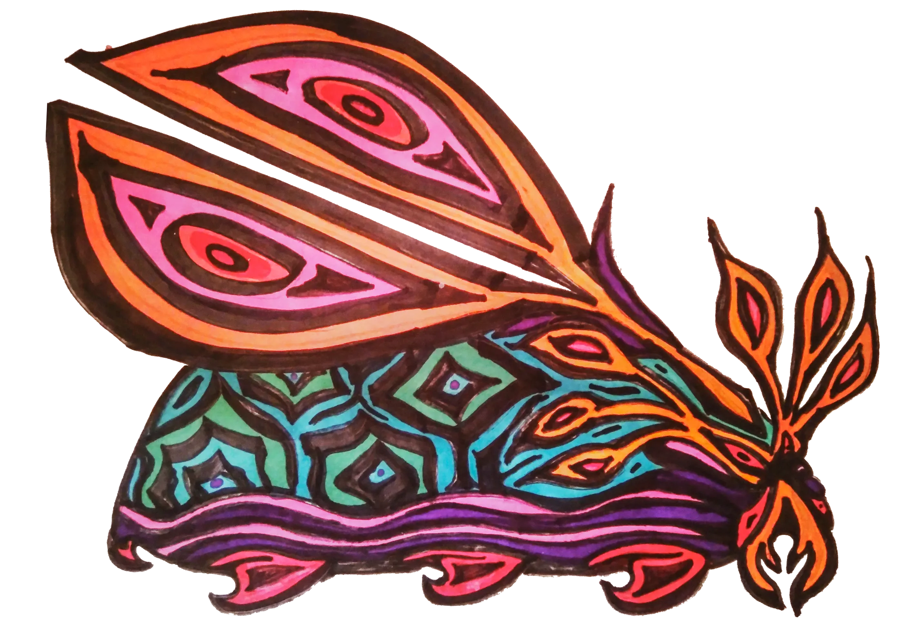
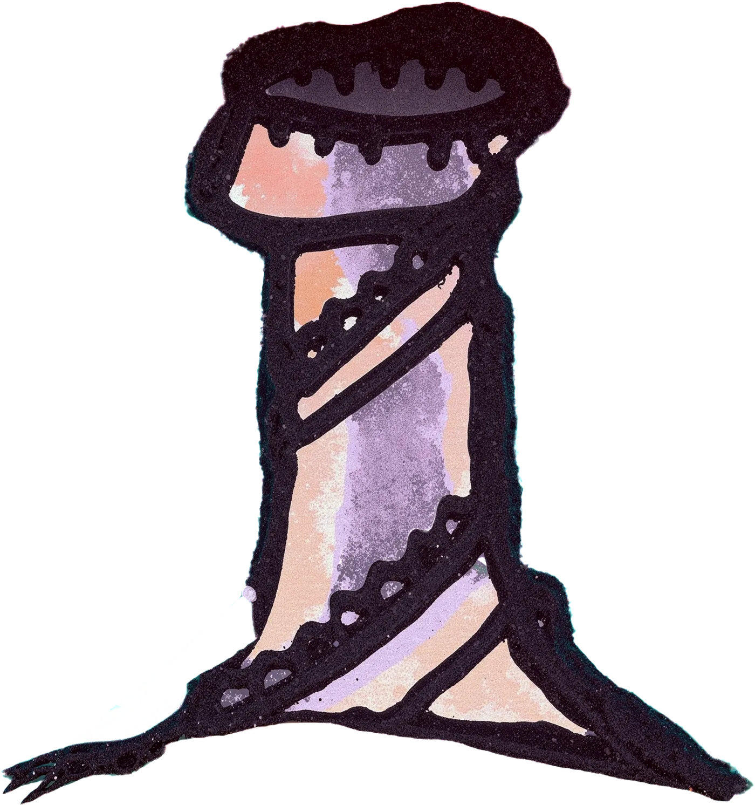
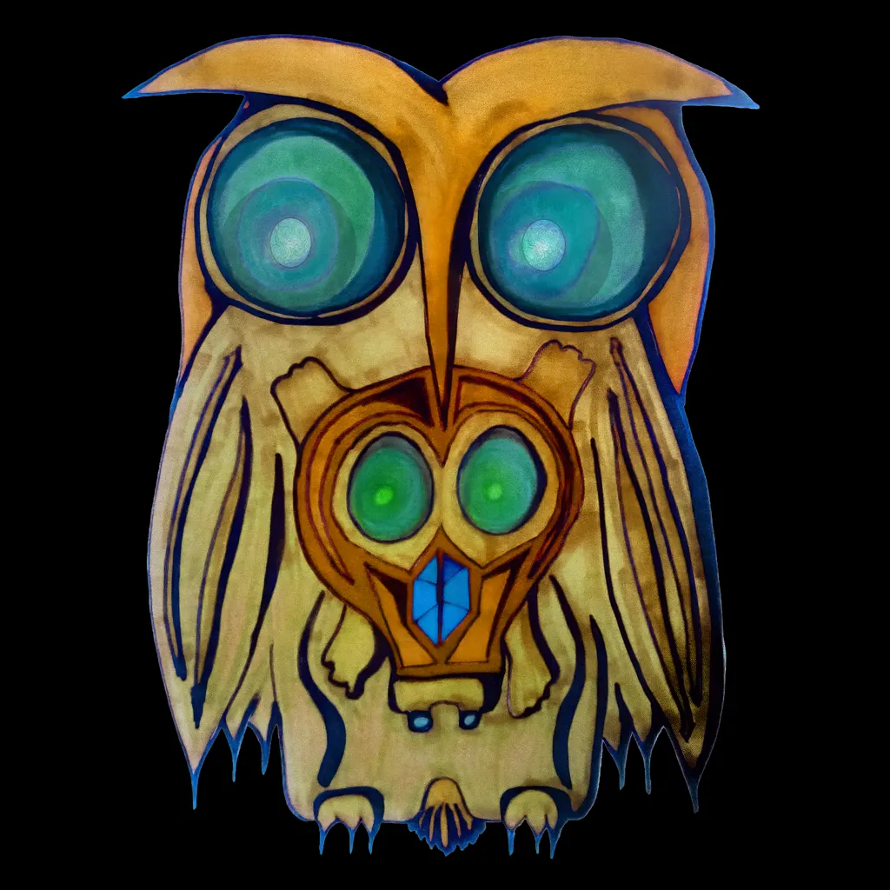

Mike Whyle
Cape Town based GenAI film-maker; writer, and creative.
Testimonials
Kind words
“Mike’s an excellent writer with a clear and knowledgeable passion for all things AI…
Mike’s output is fantastic and increasingly wide-ranging - the quality is always great…
…Moreover, he’s a fast worker who is able to distill complex subject matter to simple outputs.”
“Mike’s strategic thinking and content writing are top notch.”
“Mike’s work was exceptionally insightful and his deliverables are always of excellent quality.”
“Mike… …the master of turning client ideas and content briefs into engaging stories, the champion of clever copy, and the guy who always found just the right word.
Your talent for crafting magic with words has been an incredible asset to our team…”
Clients
Some of the awesome companies and brands who’ve entrusted me with their storytelling include Pencil*, Virgin Active, Radisson RED hotels, Kearney, Scatec, Africa Health Conference, Table Mountain Aerial Cableway Company (TMACC), as well as nimble start-ups like Lula, Deep Atomic, and Twintech.
Currently full time at Pencil.



About
Hi, I’m Mike.
I concept, write and art-direct for AI-first brands. My work spans campaign and product copy, brand worlds, prompting systems and award-winning GenAI film.
Fifteen years of writing across technology, energy, healthcare and finance give the work its range. Four years of hands-on generative practice give it its edge. At Pencil, I turn a fast-moving product into clear, visual material that clients and colleagues rely on.
Recognition · 2026Kalimba: shortlisted from 400+ entries in The Brandtech Group GenAI Film Competition.
Choose a card, or scroll on
A spec film. This is what cinematic AI looks like now.
Enter the film →iHuman Being
The films
09 films · scroll to travel
Scroll to turn · drag to tumble · a titled tile opens its piece
ivPast the cards, a fourth door
Vibe-Coding
SLUMBR
Drift off →
Afrikan Tarot
Read your cards →
Mystik Skies
Play →
Magic Carpet Wizard
My first ever GitHub repo to earn stars and forks. Hella proud of that!
Play →
Manuscript Maker
A game in the making. Work in progress.
Explore the WIP →Soundscape by SLUMBR.
vOnwards
Let's build worlds together.
Made with Fable 5
© 2026 Mike Whyle
Mikey
Cape Town